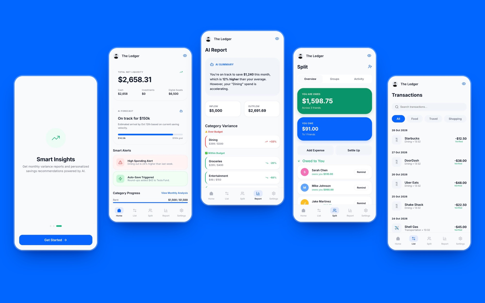
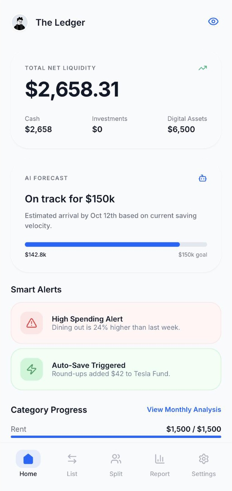
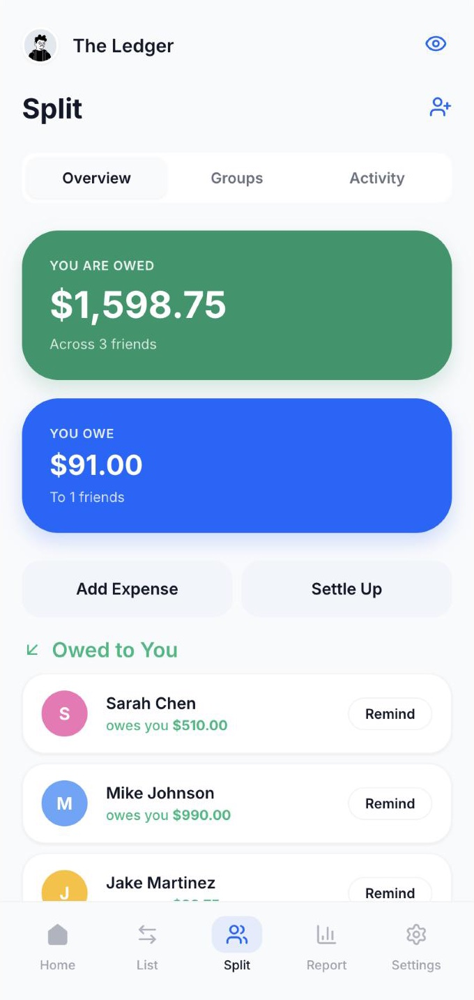
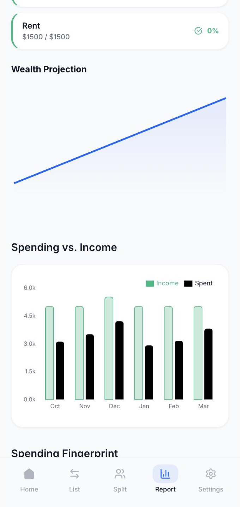
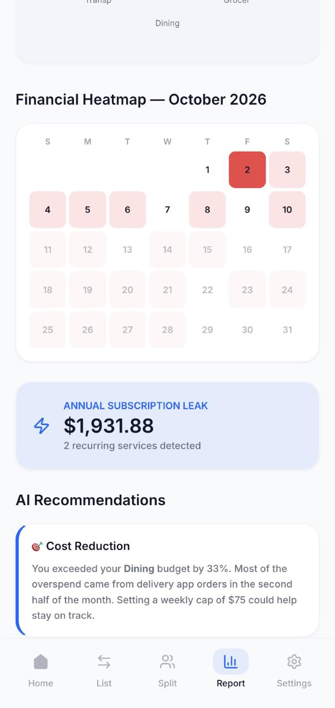
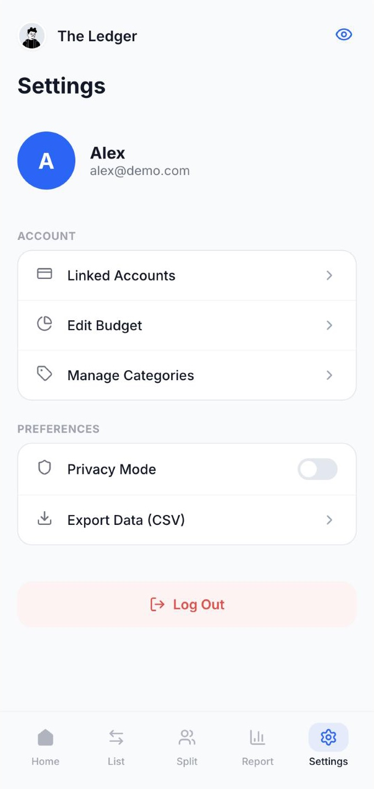
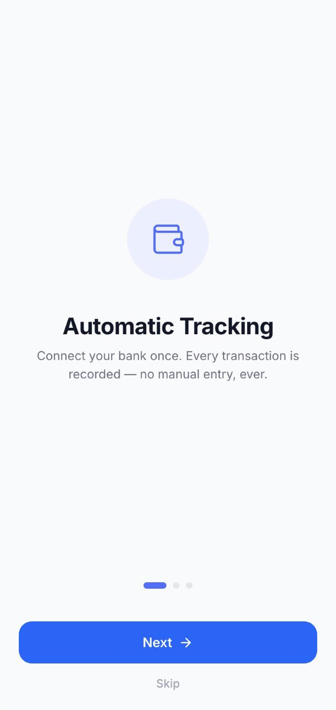
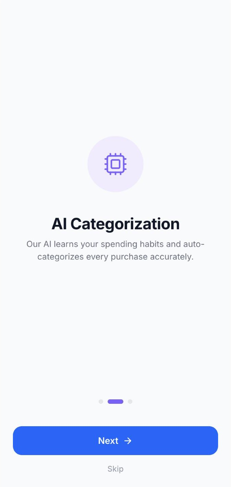
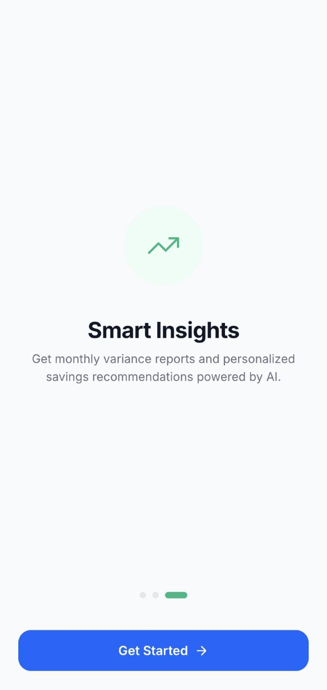

An AI-assisted money app that records your spending on its own, splits bills with friends and explains your month in plain language.
Role
UX & UI design
Type
Mobile app, personal finance
Year
2026
Built with
React

Onboarding, home, AI report, split and transactions
01 — Overview
A money app that does the bookkeeping for you.
FlowLedger connects to your bank once, then records and categorises every transaction for you. On top of that ledger it adds what a spreadsheet can’t: a forecast towards your goals, alerts when spending drifts, a shared tab with friends, and a monthly report written in plain language.
It’s designed phone-first, for the moments people actually check their money: in a queue, after dinner, just before buying something.
02 — The challenge
Turning a list of payments into something you can act on.
Numbers without meaning. A balance and a list of payments say what happened, not whether you’re on track.
Money is social. Dinners, trips and rent get shared, and keeping score with friends is awkward.
Small leaks add up. Subscriptions and recurring bills are easy to forget until they’re charged.
It’s personal. People check their finances in public, so the app has to be discreet.
03 — Approach
Six decisions that shaped the app.
01Start with one number, then where it’s heading
Home opens on a single figure, total net liquidity, split into cash, investments and digital assets. Under it, an AI forecast shows progress towards a savings goal and when you’ll reach it. Then smart alerts flag what changed this week, green for good news and red when something needs attention, and bars show how much of each budget is left, followed by savings pots and the bills coming up.

Home: the balance, the forecast, then what changed
02A ledger you can scan
Transactions are grouped by day, each with a category icon, the merchant, the category and time, and the amount with its status. A search field and category chips (food, travel, shopping, entertainment) narrow the list in one tap.
03Splitting without the awkwardness
Split opens on two cards, what you’re owed and what you owe, then one row per friend with a single action: Remind, or Pay Up. Add Expense and Settle Up sit right under the totals, with shared groups (a flat, a weekend trip) and a log of who paid what one tab away.

The ledger, and splitting with friends
04A report that explains itself
The AI report starts with a sentence rather than a chart: how much you’re on track to save, and what’s working against it. Then money in and out, each category marked over or within budget, spending against income over six months, a heatmap of the month, the yearly cost of your subscriptions, and recommendations that end in a concrete next step, like a weekly cap on dining.


The AI report: summary first, detail after, a next step at the end
05Discreet by default
The eye in the header blurs every balance in place, for checking your money on a train or at a table. The same privacy mode lives in Settings, next to linked accounts, budgets, categories and exporting your data.

Privacy mode on, and the settings behind it
06Three screens to set expectations
Onboarding is three slides, one idea each: tracking that happens on its own, AI that sorts every purchase, and insights that tell you what to do next. Skip is always there for anyone who would rather just start.



Onboarding: automatic tracking, AI categorisation, smart insights
04 — Design system
Quiet surfaces, one confident blue.
Soft slate-white backgrounds and white cards keep the numbers up front. One electric blue carries every action and every bar of progress, while green, amber and red are saved for meaning: on track, watch out, over.
Blue#0066FF · Actions
Ink#111827 · Text
Grey#6B7280 · Quiet text
Slate#F8FAFC · Background
Green#10B981 · On track
Amber#F59E0B · Watch out
Red#EF4444 · Over budget
AaInterHeadings & numbers
$2,658Big, tabular figuresThe balance comes first
Four corners10 · 16 · 20 · 32
05 — Outcome
A working app, live on the web.
FlowLedger is built in React and deployed, so every screen here can be tapped through: the five tabs, onboarding, search and filters on the ledger, groups and activity in Split, and privacy mode. It’s laid out for a phone, so it’s best opened on one.